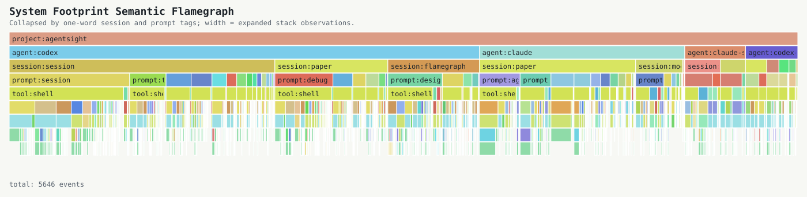
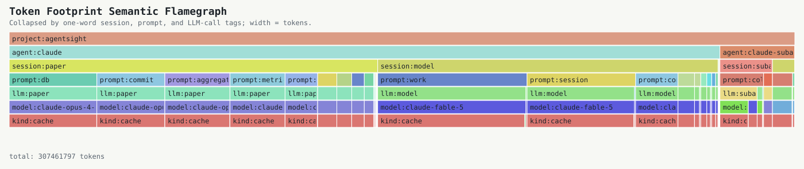

AgentSight Semantic Flamegraph Experiment
Real local Codex and Claude sessions are reduced to one-word tags, then converted to folded stacks before rendering. The important artifact is the folded stack, not the tree drawing.
Tagger mode: llama. Model successes: 60. Fallback tags: 2292. Generated at 2026-06-14T04:17:33+00:00.
System Footprint
Width is aggregated stack-observation count. One tool event may expand to multiple path/domain observations. Stack grammar: project;agent;session-tag;prompt-tag;tool;cmd;effect;path/domain/status.

Token Footprint
Width is token count split by provenance kind: input, output, cache, or estimate. Treat this as source-local accounting, not a cross-agent cost benchmark. Stack grammar: project;agent;session-tag;prompt-tag;llm-tag;model;kind.

Top Prompt Tags
| tag | count |
|---|---|
| session | 60 |
| paper | 46 |
| flamegraph | 31 |
| model | 25 |
| claude | 9 |
| prompt | 5 |
| subagent | 3 |
| debug | 2 |
| test | 2 |
| readreview | 1 |
| reviewing | 1 |
| implement | 1 |
Repeated System Stacks
| stack | weight |
|---|---|
| project:agentsight;agent:codex;session:session;prompt:session;tool:shell;cmd:git;effect:read;status:ok | 173 |
| project:agentsight;agent:claude;session:paper;prompt:paper;tool:shell;cmd:gh;effect:process;path:eunomia-bpf/agentsight;status:ok | 167 |
| project:agentsight;agent:claude;session:paper;prompt:paper;tool:shell;cmd:gh;effect:process;status:ok | 165 |
| project:agentsight;agent:codex;session:paper;prompt:paper;tool:shell;cmd:git;effect:read;status:ok | 83 |
| project:agentsight;agent:claude;session:paper;prompt:paper;tool:shell;cmd:tail;effect:read;path:session/tasks;status:ok | 77 |
| project:agentsight;agent:codex;session:session;prompt:session;tool:shell;cmd:sed;effect:read;path:collector/src/sources;status:ok | 62 |
| project:agentsight;agent:codex;session:session;prompt:session;tool:shell;cmd:cargo;effect:test;status:ok | 41 |
| project:agentsight;agent:codex;session:session;prompt:session;tool:shell;cmd:sed;effect:read;path:collector/src/view;status:ok | 40 |
| project:agentsight;agent:codex;session:session;prompt:session;tool:shell;cmd:agentsight;effect:process;path:collector/target/debug;status:ok | 38 |
| project:agentsight;agent:codex;session:session;prompt:session;tool:shell;cmd:rg;effect:read;path:collector/src;status:ok | 36 |
Nonsemantic Baseline
The baseline removes session and prompt tags before folding. It shows what a process/tool summary can find without semantic attribution.
| stack | weight |
|---|---|
| project:agentsight;agent:codex;tool:shell;cmd:git;effect:read;status:ok | 288 |
| project:agentsight;agent:claude;tool:shell;cmd:gh;effect:process;path:eunomia-bpf/agentsight;status:ok | 167 |
| project:agentsight;agent:claude;tool:shell;cmd:gh;effect:process;status:ok | 166 |
| project:agentsight;agent:codex;tool:shell;cmd:cargo;effect:test;status:ok | 82 |
| project:agentsight;agent:claude;tool:shell;cmd:tail;effect:read;path:session/tasks;status:ok | 77 |
| project:agentsight;agent:codex;tool:shell;cmd:gh;effect:process;status:ok | 70 |
| project:agentsight;agent:codex;tool:shell;cmd:sed;effect:read;path:collector/src/view;status:ok | 67 |
| project:agentsight;agent:codex;tool:shell;cmd:sed;effect:read;path:collector/src/sources;status:ok | 65 |
| project:agentsight;agent:codex;tool:shell;cmd:python3;effect:process;status:ok | 64 |
| project:agentsight;agent:codex;tool:tool;cmd:write;effect:process;status:observed | 52 |
Behavior Diff
Normalized system stacks are compared after removing the agent frame and normalizing by each cohort's total observations. This is a diagnostic, not a causal claim.
| cohort | winner | delta/1k | codex/1k | claude/1k | codex | claude | normalized stack |
|---|---|---|---|---|---|---|---|
| top | claude | -111.698 | 1.83 | 113.528 | 6 | 167 | project:agentsight;session:paper;prompt:paper;tool:shell;cmd:gh;effect:process;path:eunomia-bpf/agentsight;status:ok |
| top | claude | -102.714 | 9.454 | 112.169 | 31 | 165 | project:agentsight;session:paper;prompt:paper;tool:shell;cmd:gh;effect:process;status:ok |
| all | claude | -85.976 | 1.642 | 87.618 | 6 | 167 | project:agentsight;session:paper;prompt:paper;tool:shell;cmd:gh;effect:process;path:eunomia-bpf/agentsight;status:ok |
| all | claude | -78.083 | 8.486 | 86.569 | 31 | 165 | project:agentsight;session:paper;prompt:paper;tool:shell;cmd:gh;effect:process;status:ok |
| top | codex | 52.76 | 52.76 | 0.0 | 173 | 0 | project:agentsight;session:session;prompt:session;tool:shell;cmd:git;effect:read;status:ok |
| top | claude | -52.345 | 0.0 | 52.345 | 0 | 77 | project:agentsight;session:paper;prompt:paper;tool:shell;cmd:tail;effect:read;path:session/tasks;status:ok |
| all | codex | 47.358 | 47.358 | 0.0 | 173 | 0 | project:agentsight;session:session;prompt:session;tool:shell;cmd:git;effect:read;status:ok |
| subagent | codex | 42.781 | 42.781 | 0.0 | 16 | 0 | project:agentsight;session:osdi;prompt:prompt;tool:shell;cmd:nl;effect:read;path:docs/visexp/semantic_tag_flamegraph.py;status:ok |
| subagent | codex | 42.781 | 42.781 | 0.0 | 16 | 0 | project:agentsight;session:paper;prompt:paper;tool:shell;cmd:git;effect:read;path:origin/master...head;status:ok |
| all | claude | -40.399 | 0.0 | 40.399 | 0 | 77 | project:agentsight;session:paper;prompt:paper;tool:shell;cmd:tail;effect:read;path:session/tasks;status:ok |
| subagent | claude | -34.483 | 0.0 | 34.483 | 0 | 15 | project:agentsight;session:subagent;prompt:subagent;tool:edit;cmd:edit;effect:write;path:collector/src/cmd_exec.rs;status:ok |
| subagent | claude | -32.184 | 0.0 | 32.184 | 0 | 14 | project:agentsight;session:subagent;prompt:subagent;tool:shell;cmd:cargo;effect:test;status:ok |
Artifacts
semantic-system.folded.txt, nonsemantic-system.folded.txt, semantic-token.folded.txt, aggregation.json, agent-diff.csv, command-summary.csv, prompt-tags.csv, and sessions.json are generated beside this page.